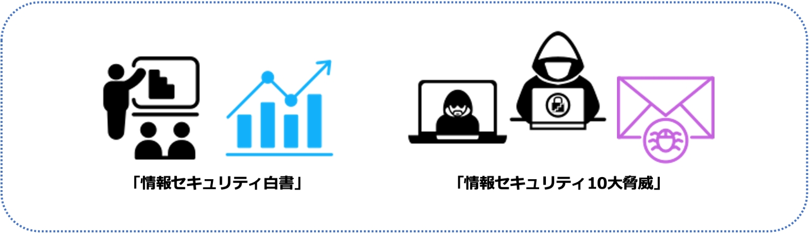

2-1-1. 情報セキュリティの脅威を学ぶ
情報セキュリティは、個人のユーザから国の重要インフラやグローバルの通信インフラまで、あらゆるレベルで重要な課題となっています。現代の情報技術の進歩により、私たちの生活はますますデジタル化されており、情報の安全保障は社会の安定と発展を支える要素となっています。しかし、便利さの一方で、情報漏えいや不正アクセスといった様々な脅威にさらされています。その脅威を理解することは、組織や個人の情報セキュリティのレベルを向上させるのにも有効で、個人がセキュリティの基本的な知識を持つことで、組織全体の情報セキュリティレベルが向上します。
どのような脅威があるかは、情報処理推進機構（IPA）が公開する「情報セキュリティ白書」や「情報セキュリティ10大脅威」が参考になります。情報セキュリティ白書は、情報セキュリティの現状とその将来の展望を示し、情報セキュリティの傾向と課題を詳細に説明しています。そして、情報セキュリティ10大脅威は、1年間で注目を集めた脅威について事例や対策等を紹介しています。
脅威情報

目的
脅威情報を把握することで、攻撃の傾向や手法、そして最新の脆弱性情報からセキュリティリスクを把握し、適切な予防策や対策を講じること
学べる内容
- 攻撃手法や攻撃者の手口
- 最近の攻撃傾向
- 脅威に対するセキュリティ対策方法
活用例
- 攻撃の予防
- セキュリティリスク管理、対策の強化
- セキュリティポリシーの改善
- セキュリティインシデントへの対応
- 脅威トレンドの把握、共有
- セキュリティ意識の向上
詳細理解のため参考となる文献（参考文献）